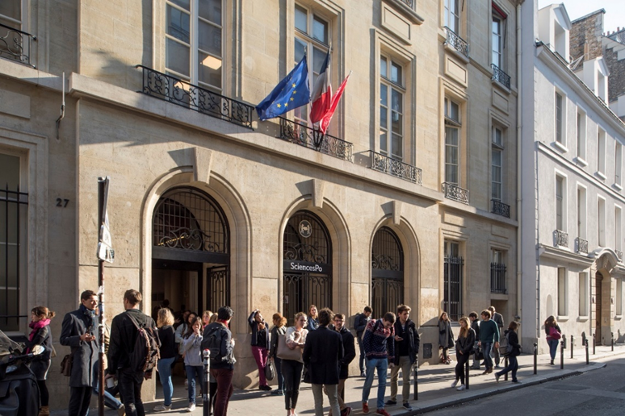

教务处 · 校园活动
项目发布 |【大川视界】世界名校：法国巴黎政治大学2025年夏校学分项目
发布时间：2025-03-05
为提升学生的国际视野，推进我校人才培养国际化战略，促进国际传播力建设和提升学校的国际影响力，现启动选派本科生和研究生赴法国参加“巴黎政治大学2025年夏校学分项目”的工作。为保证此项工作的顺利进行，现就有关事项通知如下： 一、项目介绍 （一）学校简介 巴黎政治大学（Sciences Po，简称巴政）是法国乃至全球的顶尖政治大学，被誉为“法国社会精英的摇篮”。自创立以来，它培养了8位法国总统中的6位（包括现任总统马克龙）和13位总理，以及众多外国国家元首和政府首脑，是当之无愧的世界级名校。巴政人文社会科学水平突出，学科建设以政治学为中心，兼具历史学、法学、经济学和社会学，同时也参与了许多跨学科课题，如城市研究、 政治生态学 、 可持续发展 、数字与 公共政策 、社会经济学和 全球化 。2024年QS政治学专业排名，巴政排名全球第2，仅次于哈佛大学。 （二）课程设置 2025 年巴政夏校提供以下三类课程： 1. 社会科学课程 （6个欧洲学分） 2. 法语语言课程 （6个欧洲学分） 3. 选修课 （3个欧洲学分） 登录官网查看课程详情： https://www.sciencespo.fr/summer-school/en/news/university-programme/ （三）课程特色与优势： 沉浸式学习和生活在巴黎的日常语言和文化中。从历史悠久的校园出发，学生可以轻松步行到达巴黎一些最著名的地标。夏校提供文化活动，让学生有机会探索巴黎市以及法国历史和文化。 夏校的同学来自世界各国，具有不同的学术和专业背景。学生将通过各项课程和活动构建跨文化学习社区，通过国际合作项目拓展全球视野。 二、项目时间与费用 （一）项目时间： 2025年7月1日-25日 （二）项目费用： 1. 学费： 15 人以下 2900 欧/人 约人民币2.2万 15-30 人 2600 欧/人 （夏校合作院校特别优惠） 约人民币1.95万 选修课 500 欧/门 约人民币3750元 申请费 50 欧 无法退还 以上费用不包括：机票、保险、签证费、住宿、当地交通和膳食。 * 学费须在巴政录取后一周内交600欧元（无法退还）预付金以锁定席位，并在两周内交完剩余费用并完成注册。 2. 住宿费： 巴政没有学生宿舍，学校为学生提供多种住宿选择： （1）校外公寓： 1201.20 欧元（约人民币9100元）（须年满18岁才能预订） （2）接待家庭： 1210 欧元（约人民币9100元）（除了强制性责任保险外，没有额外费用） （3）其他各类酒店等。 登录网站可了解住宿详情(请勿自行预订,录取后由巴政 根据学生 人数安 排住宿)： https://www.sciencespo.fr/summer-school/en/university-programmes/key-information/accommodation/ 。 三、报名条件 （一）拥护中国共产党的领导、热爱祖国、品德优良；遵章守纪，无纪律处分； （二）除大一学生以外的全日制非毕业年级在校本科生和研究生，专业不限（出发前须年满18周岁）； （三）学习和语言能力： 1. 社会科学课程： 英语成绩要求： a)托福成绩不低于90（IBT 或 Home Edition），阅读和听力不低于46分，口语和写作不低于44分； b)雅思6.5小分不低于5.5； c）多邻国不低于130分； d)也可参加巴政提供的线上免费语言测试获得同等成绩。 2. 法语语言课程：提供过去三年内获得的官方法语语言成绩，接受语言考试类型包括：DELF，DALF，TCF；或参加巴政提供的法语线上免费语言测试。参加A1课程的同学无需提交法语语言成绩；参加A1-B1课程的非英语母语同学，除法语成绩外（除A1），需同时提交与社会科学课程同等英语要求的语言证明； （四）综合素质：具备开放包容的交流心态和独立海外生活能力；身心健康；学生在国外学习期间，尊重当地风俗，遵守当地法律法规和对方学校的规章制度，接受对方学校的管理。 四、项目申请时间与流程 （一）校内申请时间：即日起至3月19日18:00 （二）校内申请流程： 1. 本科生 登录教务处国内国际合作交流管理系统http://jxyw.scu.edu.cn:8081/gjjl/，选择“法国巴黎政治大学2025年夏校学分项目（“大川视界”）”进行在线申请。 特别提醒： （1）请下载登录界面操作手册后进行操作，若遇技术问题，可打电话13183867686或QQ：1134372115咨询。 （2）为实现项目报名工作流程化、信息化，学院、学校将通过系统完成项目审批（报名学生无需再交纸质材料），请学生在线报名后及时告知学院教务办，请学院相关人员在系统中于截止日期内完成学院审核。 （3）川大所修课程中文成绩以系统计算为准，若有疑问，请持成绩单原件与教务处合作与交流科联系。 2. 研究生 通过研究生院申请 （1）申请人：c登录四川大学研究生管理系统——国际学术交流申请应用，选择“寒暑假访学项目申请”，选择相应的访学项目，填写申请，提交并打印出纸质《申请表》，将纸质《申请表》递交导师、学院审核。 （2）导师：登录四川大学研究生管理系统——国际学术交流应用，在“寒暑假访学项目”中审核并在纸质版《申请表》上签署意见、签字。 （3）学院：学院研究生教务老师登录四川大学研究生管理系统——国际学术交流应用，在“寒暑假访学项目”中审核，并由学院主管领导在纸质版《申请表》上签署意见、签字、盖公章。 （4）学院审核后，纸质《申请表》以学院为单位报研究生院3-325培养办公室。 （三）校内报名结束后，国际处将组建同学微信群通知后续事宜，组织同学在巴政网申。巴黎政治大学将根据语言成绩及申请材料情况负责录取，并根据学生人数安排住宿。未在校内报名只在外方院校报名的同学将不能申请“大川视界”的资助。 五、特别提醒 （一）为保证出行顺利，请在报名成功后及时告知学院辅导员，并在出境前登录四川大学学生出国（境）网上备案系统完成备案，流程见https://global.scu.edu.cn/?channel/490/504/564/595。 （二）护照和签证办理：报名期间可先同步办理护照。待外方院校录取和缴费成功后持邀请函和护照办理签证。 六、咨询电话 国际合作与交流处85401551（项目咨询） 教务处合作交流科85402398（本科生报名咨询） 研究生院培养办85405146（研究生报名咨询） 法国巴黎政治大学夏校邮箱：summer.school@sciencespo.fr 七、巴政2025年夏校线上宣讲会： 会议时间：3月11日周二 20：00（北京时间）： 会议链接：https://sciencespo.zoom.us/j/95804174211 讲座人信息: 巴政夏校负责人 Chloé Pradal-Morand Programme Manager SUMMER SCHOOL & SHORT COURSES 附件：巴黎政治大学2025年夏校手册 <!--
